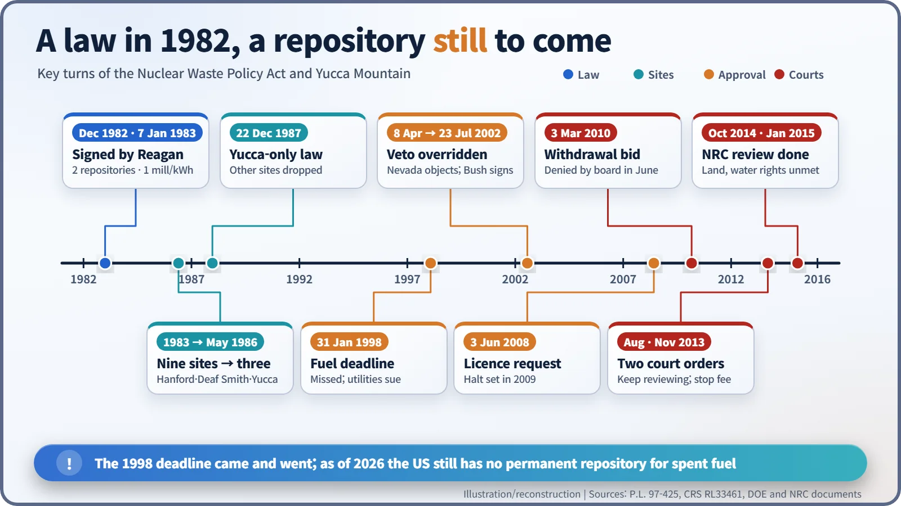
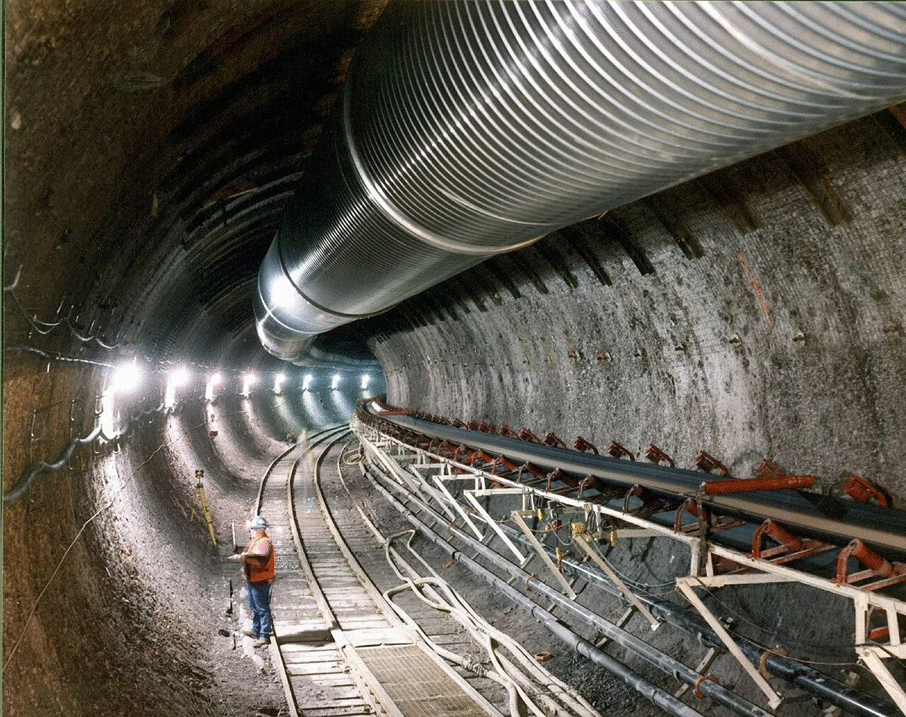
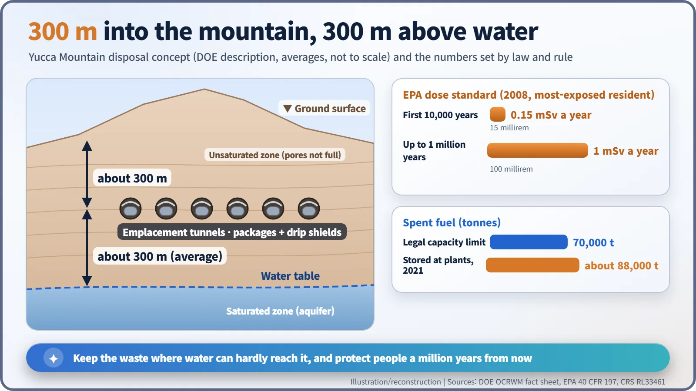
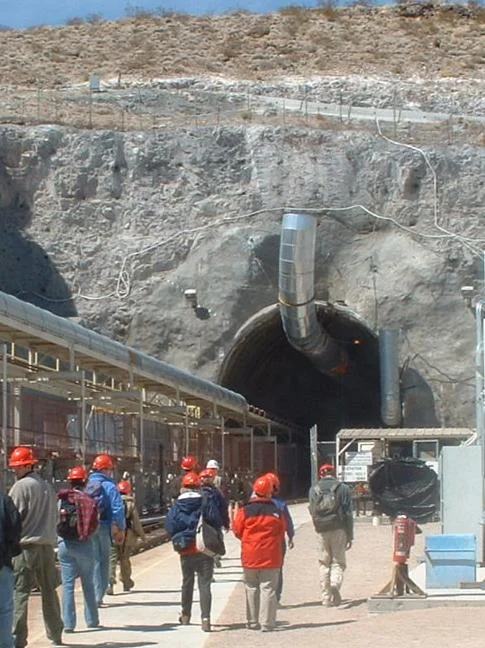
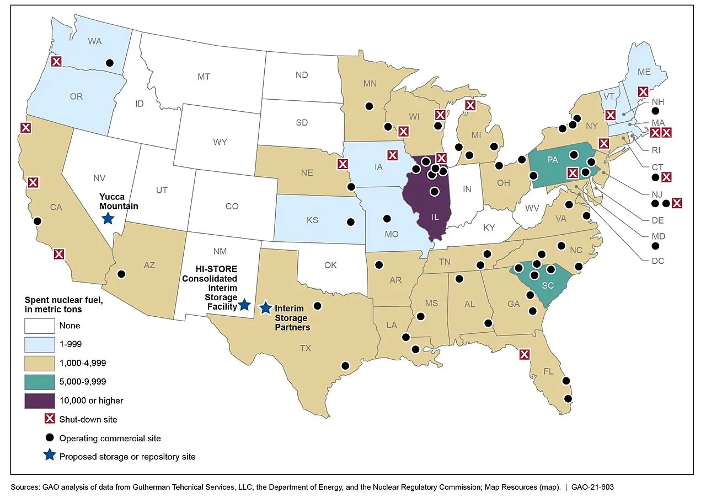

Nuclear History · 249
A Mountain Asked to Answer for a Million Years — the Nuclear Waste Policy Act (1982) and Yucca Mountain
A law with a deadline, a fee and a veto that Congress could overrule picked one Nevada mountain, and forty years on the United States still has no repository.
The Nuclear Waste Policy Act, passed by Congress in December 1982 and signed on 7 January 1983, gave the US a plan for burying spent nuclear fuel: who would build the repository, by when, and with what money. Amendments in 1987 narrowed the search to a single site, Yucca Mountain in Nevada. Two decades of studies, a state veto overridden by Congress and a licence application followed, but the project stopped in 2010, and the United States still has no permanent repository.
A veto with a catch
On 8 April 2002 the governor of Nevada, Kenny Guinn (1936–2010), sent Congress a formal "notice of disapproval". Two months earlier President George W. Bush had recommended Yucca Mountain, a desert ridge in Nevada, as the site of the nation's repository for high-level radioactive waste. Guinn's notice was the so-called state veto.
The veto came with a catch: it would stand only unless both houses of Congress passed a resolution approving the site. The House did so on 8 May by 306 votes to 117, the Senate followed on 9 July, and Bush signed on 23 July 2002. Nevada's objection was over in three and a half months. The rule that made this possible had been written twenty years earlier. [2]
1982: who, by when, and with whose money
After commercial reprocessing was deferred indefinitely in the late 1970s, spent fuel from American reactors had only one destination left: to be buried whole, deep underground. In the meantime the storage pools at power plants kept filling up.
Congress passed the Nuclear Waste Policy Act (NWPA) in December 1982, and President Ronald Reagan (1911–2004) signed it on 7 January 1983 as Public Law 97-425. That is why it carries the year 1982 in its name. Its frame had four parts: [1]
- Responsibility: the Department of Energy (DOE) would find and build permanent deep geological repositories, two of them in the original plan.
- Deadline: DOE would begin taking spent fuel from utilities by 31 January 1998.
- Money: a fee of one mill (a tenth of a cent) on every kilowatt-hour of nuclear electricity would build up a Nuclear Waste Fund. Those who used the power would pay for the clean-up.
- Consent, of a kind: a host state could say no, but Congress could overrule it.
Nine sites, then three, then one
In 1983 DOE identified nine potential sites in six states. In May 1986 the list for detailed study was cut to three: Hanford in Washington, Deaf Smith County in Texas, and Yucca Mountain.
The decisive turn came on 22 December 1987. Congress tucked amendments into a budget reconciliation bill that limited site studies to Yucca Mountain alone and shelved the second repository. The official reason was the cost and delay of studying three sites at once. Nevadans, the story is often told, had a blunter name for the change: the "Screw Nevada Bill". [2]

How a mountain was meant to keep the waste
Yucca Mountain lies about 130 km (80 miles) northwest of Las Vegas, on federal land next to the former Nevada Test Site. It is built of tuff, layers of volcanic ash that hardened into rock. According to DOE, the emplacement tunnels would sit about 300 metres (1,000 feet) below the surface and, on average, about 300 metres above the water table, in the "unsaturated zone", where the pores in the rock are not filled with water. In a desert little rain soaks in, and metal waste packages under titanium drip shields would add further barriers to slow any water on its way to the waste. DOE bored a U-shaped exploratory tunnel about 8 km long inside the mountain and spent years measuring water, heat and rock. [4]

A standard measured in millions of years
The safety standard asked for an almost unimaginable stretch of time. In 2001 the Environmental Protection Agency (EPA) limited the dose to the most exposed future resident to 0.15 millisievert (15 millirem) a year for 10,000 years after disposal. In 2004 a federal appeals court struck down the 10,000-year period as shorter than the National Academy of Sciences had recommended. The rule finalised in October 2008 added a second limit of 1 millisievert (100 millirem) a year from 10,000 years out to one million years. [3]

Questions for science, questions for politics
The scientific debate split along clear lines. DOE and the project's supporters pointed to the dry climate, the deep water table and the engineered barriers. The State of Nevada and other opponents pointed to studies suggesting that water could move down through fractures in the tuff faster than expected, to a fault found in 2007 beneath a planned storage pad, to volcanic and seismic hazards, and to the risks of shipping waste through cities. The Western Shoshone opposed the project on land they regard as sacred.
The political fight had a clear centre too. Harry Reid (1939–2021), a senator from Nevada, became Senate majority leader in 2007 and led the effort to stop the project. DOE filed its construction licence application with the Nuclear Regulatory Commission (NRC) on 3 June 2008, but the Obama administration decided in 2009 to end the project, and on 3 March 2010 DOE asked to withdraw the application. [2]
A review without a verdict
Contrary to a common belief, the NRC never rejected Yucca Mountain. In June 2010 its licensing board refused to let DOE withdraw the application; the review then stopped for lack of funds. After a federal appeals court ordered the NRC in August 2013 to keep going with the money it had, NRC staff completed their safety evaluation in January 2015. They found that the design would meet the standards for a million years after permanent closure, but that the licence could not be granted while requirements such as land and water rights were unmet.
In November 2013 the same court ordered DOE to stop collecting the waste fee, and collection ended in May 2014. At the end of fiscal year 2017 the fund held about $44.5 billion. Meanwhile, because DOE missed its 1998 deadline, it had paid utilities about $8.6 billion in damages by fiscal year 2020. In 2021 about 88,000 tonnes of spent fuel were stored at US power plant sites, already more than the 70,000-tonne legal limit for Yucca Mountain. [2]


Harder than rock
The 1982 law had a deadline, a funding stream and a procedure. What it never secured was the consent of the place chosen, and in the end the site was settled by a vote in Congress. That is why the Blue Ribbon Commission on America's Nuclear Future recommended a "consent-based" approach to siting in 2012. Finding rock that can hold out for a million years turned out to be easier than winning a "yes" from the people living above it today.